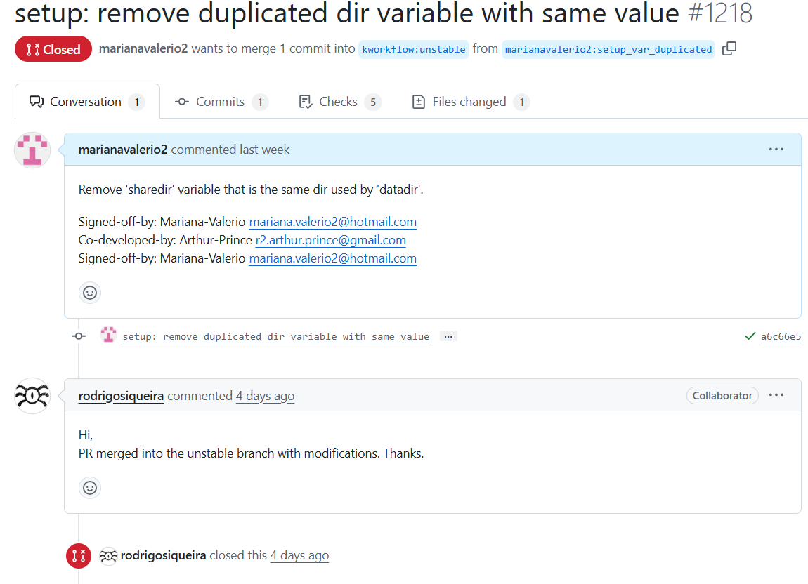

🎯 Primeira contribuição aceita no KWorkflow!
Depois de estudar o repositório do KWorkflow e analisar onde poderíamos contribuir, encontramos uma variável duplicada no código. Embora fosse uma mudança simples, ela traz mais clareza e organização para o projeto.
📌 Criamos um pull request removendo a variável 'sharedir', que estava com o mesmo valor da 'datadir'.
📬 Nossa contribuição foi aceita com modificações, e já está na branch unstable do projeto! O mantenedor comentou que o PR foi integrado com ajustes. Muito feliz com esse resultado! 😊
🔗 Veja o pull request no GitHub

📸 Captura do PR aceito
💡 Dica: Não subestime pequenas contribuições! Às vezes, corrigir algo simples pode ser o primeiro passo para ganhar confiança e se integrar à comunidade open source.